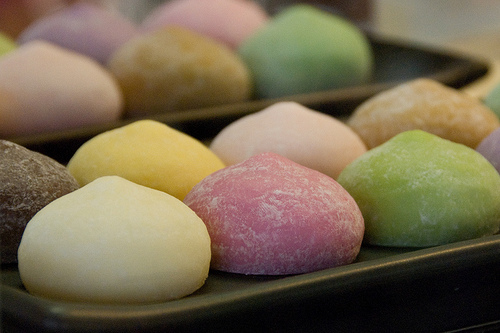

The japanese candy mochi
The description
Mochi is Japanese sticky rice cake used both in savory and sweet dishes. Mochi is usually made from sweet rice (also called Mochi rice) cooked and pounded until it becomes a paste that is very sticky and smooth, then formed into cakes or blocks.
Ingredients
- 1 cup Mochiko (sweet rice flour or Mochi flour) (160g)
- 3/4 cup water (180ml)
- 2 cups sugar (400g)
- cornstarch
- Anko (sweet red bean paste) or Green Tea Ice Cream if you want
The recipe

Mix Mochiko and water in a glass (or other heat proof) bowl and mix well. Add some more water if it's too dry, 1 Tbsp at a time.
Steam the Mochiko dough (leaving the dough in the bowl) in a steamer for 20 minutes.
Transfer the steamed Mochi into a pot and cook at medium to medium low heat with 1/3 of the sugar (2/3 cup). When the sugar is completely dissolved, add another 1/3 of the sugar and mix well. Add the last part of the sugar and cook some more until the sugar is dissolved. Take the time to melt the sugar, but be careful not to burn it.
Take the hot Mochi out from the pot onto a sheet pan liberally dusted with cornstarch. Shape as you like.
Gallery
{kind=link}
{kind=link}